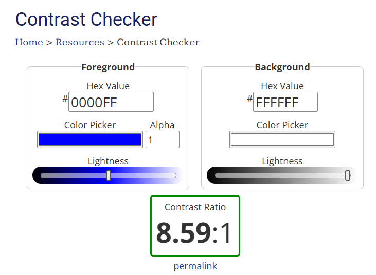

WebAIM Contrast Checker
The accessibility checker is something that is used for every website. People with disabilities
or just poor eyesight require websites to meet contrast standards for usability. This allows
the user to determine if the site is accessible toward the majority of people.
Below is an example of a contrast checker result showing accessible color contrast levels.
This video explains what accessibility is and why it's essential for inclusive web design.